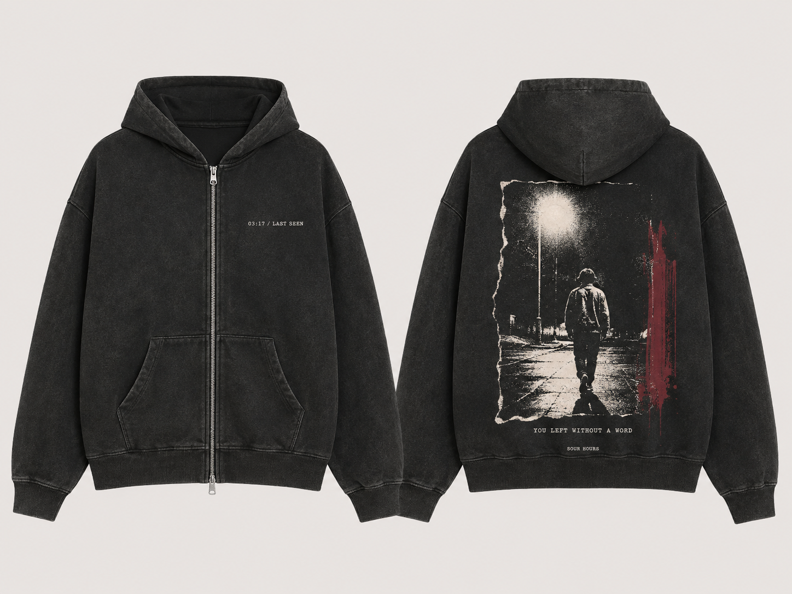

01

Last Seen
Zip hoodie420–460 GSM
03:17. Une silhouette quitte la lumière du lampadaire sans se retourner.
photo 35 mmtrame grossièreencre gonflante noirelavage vintage
La pièce la plus proche du principe Live2Die : une seule image narrative imparfaite qui devient le produit, avec assez de silence autour pour qu’elle frappe.